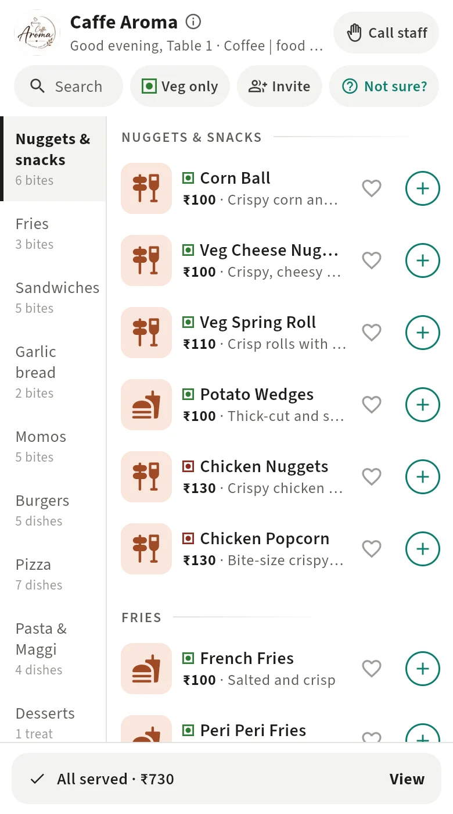
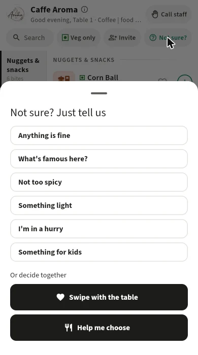
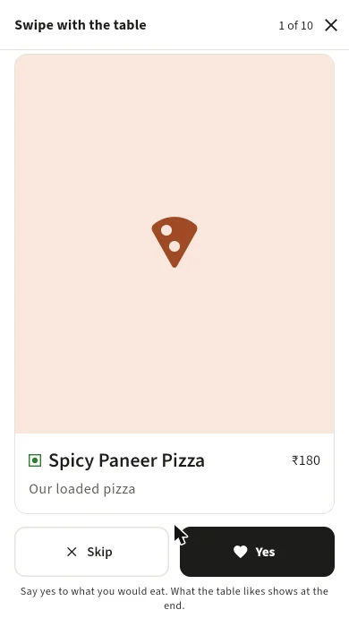

Order
Scan the QR on your table, order together from everyone's phones, and let the kitchen's phone ring for each order. No app to install.


The problem
Small cafes lose time to the ordering loop: menus, waiting for a captain, repeating orders to the kitchen. The big platforms charge commission and want to own the customer. I wanted the opposite: a tool the cafe owns, that fits around its existing billing.
Decisions that shaped it
- Never take commission, never handle payments. No compliance burden, and it works with whatever billing the cafe already has.
- The session, not the table, is the anchor. Friends join the same order from their own phones. Add-ons go as later rounds of the same order.
- No custom backend. Postgres holds the rules, with row-level security and SQL functions, and Supabase pushes live updates to the kitchen.
- Help people decide. "Not sure?" asks for a mood. "Swipe with the table" lets everyone swipe dishes, and shows what the whole table likes.

What went wrong
- I changed the stack twice. I first rejected Flutter for its first-load weight, then adopted it a week later with a hard rule: the menu must load in four seconds on a mid-range Android phone.
- Too many games. I designed six table games, then cut the first version to the core loop. One real pilot table matters more than five polished games.
- Orders at the wrong table. A phone that moved between cafes could send a reorder to the old table. Found in testing and fixed.
- PIN guessing. Anonymous sign-ins got around the per-device limit on wrong codes, so the limits now apply per cafe as well.
Where it is now
Running on a test server and ready for a first pilot cafe.